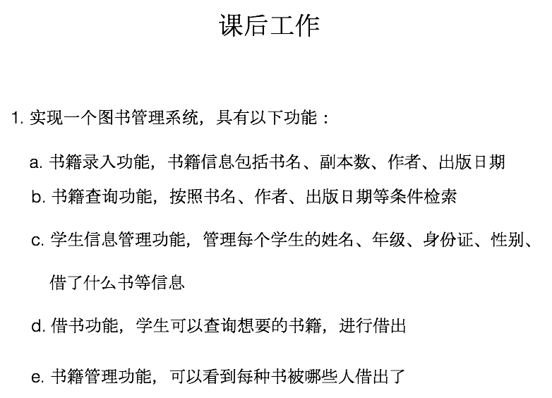

panic&recover&defer
panic
- panic一旦发生，控制权就会迅速的沿着调用栈的反方向传播
- panic后面的代码根本没有执行的机会

生命的意义是成为你自己！
type Student struct {
Name string `json:"name"` //打包压缩的字段
Age int `json:"age"`
Score int `json:"score"`
}


func classifier(items ...interface{}) {
for _, v := range items {
switch v.(type) {
case bool:
fmt.Println("bool type")
case int, int64, int32:
fmt.Println("int")
case float32, float64:
fmt.Println("float32")
case string:
fmt.Println("string")
}
}
}
func main() {
classifier(2, 8.2, "ok string", false)
}
var pipe chan int
pipe = make(chan int, 3)
pipe := make(chan int, 3)


nodeSelector:
logType: collector


kubeadm join 10.19.1.211:6443 --token 5jg2wm.lvzwvvq2ubr0uyl4 --discovery-token-ca-cert-hash sha256:56180787411165f97e1da1e7c3a33d17f5eea7e13c5003bae458dd883ce7b543